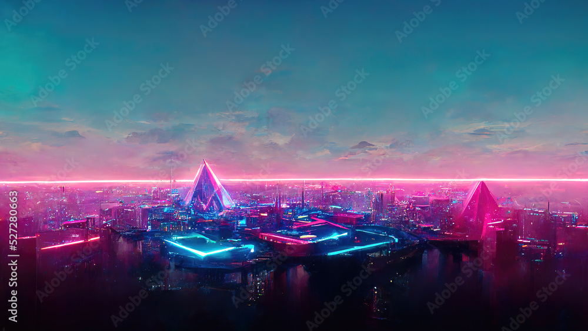

#}
{# #}
#}
{# #}
درباره ما
متاورس
یکی از موارد جالب که چند وقت است بر سر زبان ها افتاده ، واژه متاورس است . آیا واقعا مفهوم متاورس چیست ؟
بر طبق برداشت از سخنان بزرگان علم و فناوری همچون مارک زاکربرگ میتوان چنین استنباط کرد که متاورس دنیای مجازی می باشد ، که آینده اینترنت در آن گنجانده شده است هرچند مدتی است که از تغییر نام فیس بوک به متا گذشته است اما هنوز ارائه جدیدی از این دنیا جدید که قابل ملاحظه باشد مشاهده نکردیم . البته این عدم انسجام در تعریف متاورس دور از منطق نیست زیرا همانطور که در گذشته ما دیده بودیم در سال ۱۹۷۰ زمانی که اینترنت تازه ایجاد شده بود هیچکس تصوری در مورد اینکه شاهد چه دنیای در زمان حال در اینترنت خواهیم بود،نداشت و به عبارتی هیچکس توان پیش بینی این دنیای جدید اینترنت که در آن هستیم را در آن زمان متصور نبود. در حال حاضر دو راه امکان پذیر برای دسترسی به دنیای متاورس استفاده از عینک های واقعیت محازی میباشد. اگرچه اینها تنها راه های ارتباطی به این دنیای عجیب نیست همانطور که در حال حاضر برداشت کلی از اینترنت به گوگل ختم میشود اما این را می دانیم که گوگل تمام اینترنت نیست .
خرید و فروش املاک دیجیتال
ما شاهد افزایش معاملات در دنیای متاورس هستیم .قیمت های زمین در متاورس رو به افزایش است ، حتی در مواردی شاهد معامله زمین با قیمت بیش از ۴ میلیون دلار نیز بودیم این امردر بعضی از پلتفرم ها بسیار شدیدتر است به طور مثال در پلتفرم سندباکس از جمله مواردی هستند که افراد با خرید و فروش در آنها به سودهای کلان رسیدند.
Meet podcaters

Taylor

Modeling
Fashion

William
Creative
Design

Chan
Education